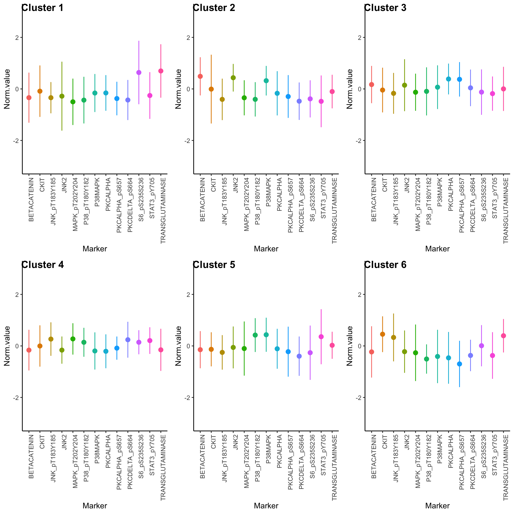

Last updated: 2021-10-28
Checks: 7 0
Knit directory: Multispectral HCC/
This reproducible R Markdown analysis was created with workflowr (version 1.6.2). The Checks tab describes the reproducibility checks that were applied when the results were created. The Past versions tab lists the development history.
Great! Since the R Markdown file has been committed to the Git repository, you know the exact version of the code that produced these results.
Great job! The global environment was empty. Objects defined in the global environment can affect the analysis in your R Markdown file in unknown ways. For reproduciblity it’s best to always run the code in an empty environment.
The command set.seed(20210728) was run prior to running the code in the R Markdown file. Setting a seed ensures that any results that rely on randomness, e.g. subsampling or permutations, are reproducible.
Great job! Recording the operating system, R version, and package versions is critical for reproducibility.
Nice! There were no cached chunks for this analysis, so you can be confident that you successfully produced the results during this run.
Great job! Using relative paths to the files within your workflowr project makes it easier to run your code on other machines.
Great! You are using Git for version control. Tracking code development and connecting the code version to the results is critical for reproducibility.
The results in this page were generated with repository version 182f85e. See the Past versions tab to see a history of the changes made to the R Markdown and HTML files.
Note that you need to be careful to ensure that all relevant files for the analysis have been committed to Git prior to generating the results (you can use wflow_publish or wflow_git_commit). workflowr only checks the R Markdown file, but you know if there are other scripts or data files that it depends on. Below is the status of the Git repository when the results were generated:
Ignored files:
Ignored: .DS_Store
Ignored: .Rhistory
Ignored: .Rproj.user/
Ignored: NMF_26ce5dfd0cab/
Ignored: analysis/.DS_Store
Ignored: code/
Ignored: data/
Ignored: old/
Ignored: output/.DS_Store
Ignored: output/tumor.hc.nmf.rank.1.rds
Ignored: output/tumor.hc.nmf.rank.10.rds
Ignored: output/tumor.hc.umap.rds
Note that any generated files, e.g. HTML, png, CSS, etc., are not included in this status report because it is ok for generated content to have uncommitted changes.
These are the previous versions of the repository in which changes were made to the R Markdown (analysis/tcga_6.Rmd) and HTML (docs/tcga_6.html) files. If you’ve configured a remote Git repository (see ?wflow_git_remote), click on the hyperlinks in the table below to view the files as they were in that past version.
| File | Version | Author | Date | Message |
|---|---|---|---|---|
| Rmd | 182f85e | Jovan Tanevski | 2021-10-28 | duplicate tcga |
Load required libraries.
library(tidyverse)
library(skimr)
library(uwot)
library(factoextra)
library(cowplot)
library(limma)
library(NMF)
library(pheatmap)Read filtered TCGA RRPA data and display summary statistics.
tcga.lihc <- read_tsv("data/TCGA-RPPA-pancan-clean.txt") %>%
filter(TumorType == "LIHC")Rows: 7790 Columns: 200── Column specification ────────────────────────────────────────────────────────
Delimiter: "\t"
chr (2): SampleID, TumorType
dbl (198): X1433EPSILON, X4EBP1, X4EBP1_pS65, X4EBP1_pT37T46, X53BP1, ACC_pS...
ℹ Use `spec()` to retrieve the full column specification for this data.
ℹ Specify the column types or set `show_col_types = FALSE` to quiet this message.tcga.raw <- tcga.lihc %>%
select(
SampleID, BETACATENIN, CKIT, JNK_pT183Y185, JNK2, MAPK_pT202Y204,
P38MAPK, P38_pT180Y182, PKCALPHA, PKCALPHA_pS657, PKCDELTA_pS664,
S6_pS235S236, STAT3_pY705, TRANSGLUTAMINASE
) %>%
column_to_rownames("SampleID")
skim(tcga.raw)| Name | tcga.raw |
| Number of rows | 184 |
| Number of columns | 13 |
| _______________________ | |
| Column type frequency: | |
| numeric | 13 |
| ________________________ | |
| Group variables | None |
Variable type: numeric
| skim_variable | n_missing | complete_rate | mean | sd | p0 | p25 | p50 | p75 | p100 | hist |
|---|---|---|---|---|---|---|---|---|---|---|
| BETACATENIN | 0 | 1 | 1.50 | 0.72 | -1.30 | 1.08 | 1.51 | 1.87 | 3.70 | ▁▁▇▅▁ |
| CKIT | 0 | 1 | 0.12 | 0.39 | -0.80 | -0.06 | 0.15 | 0.31 | 2.75 | ▂▇▁▁▁ |
| JNK_pT183Y185 | 0 | 1 | -0.21 | 0.29 | -1.14 | -0.36 | -0.17 | -0.04 | 0.48 | ▁▂▇▇▂ |
| JNK2 | 0 | 1 | 0.19 | 0.32 | -1.52 | 0.03 | 0.15 | 0.30 | 1.48 | ▁▁▇▃▁ |
| MAPK_pT202Y204 | 0 | 1 | -0.22 | 0.74 | -2.03 | -0.62 | -0.06 | 0.25 | 4.12 | ▃▇▁▁▁ |
| P38MAPK | 0 | 1 | 0.11 | 0.29 | -0.88 | -0.08 | 0.07 | 0.27 | 0.96 | ▁▂▇▃▁ |
| P38_pT180Y182 | 0 | 1 | 0.49 | 0.57 | -1.45 | 0.31 | 0.50 | 0.72 | 2.95 | ▁▂▇▁▁ |
| PKCALPHA | 0 | 1 | -0.30 | 0.40 | -1.36 | -0.59 | -0.36 | -0.02 | 0.82 | ▁▆▇▅▁ |
| PKCALPHA_pS657 | 0 | 1 | -0.46 | 0.37 | -1.74 | -0.62 | -0.47 | -0.22 | 0.46 | ▁▁▇▆▁ |
| PKCDELTA_pS664 | 0 | 1 | -0.36 | 0.15 | -0.88 | -0.42 | -0.33 | -0.26 | -0.14 | ▁▁▃▇▇ |
| S6_pS235S236 | 0 | 1 | -0.72 | 0.75 | -3.53 | -1.06 | -0.67 | -0.36 | 1.12 | ▁▁▅▇▂ |
| STAT3_pY705 | 0 | 1 | 0.14 | 0.40 | -1.27 | -0.05 | 0.20 | 0.36 | 1.20 | ▁▂▇▇▁ |
| TRANSGLUTAMINASE | 0 | 1 | -0.42 | 0.56 | -1.24 | -0.83 | -0.59 | -0.20 | 2.72 | ▇▃▁▁▁ |
Quantile normalization and rank normalization for NMF as suggested in https://gdac.broadinstitute.org/runs/analyses__2016_01_28/reports/cancer/LIHC/RPPA_Clustering_CNMF/nozzle.html
tcga.norm <- normalizeQuantiles(tcga.raw)
skim(tcga.norm)| Name | tcga.norm |
| Number of rows | 184 |
| Number of columns | 13 |
| _______________________ | |
| Column type frequency: | |
| numeric | 13 |
| ________________________ | |
| Group variables | None |
Variable type: numeric
| skim_variable | n_missing | complete_rate | mean | sd | p0 | p25 | p50 | p75 | p100 | hist |
|---|---|---|---|---|---|---|---|---|---|---|
| BETACATENIN | 0 | 1 | -0.01 | 0.44 | -1.47 | -0.25 | -0.01 | 0.23 | 1.74 | ▁▃▇▂▁ |
| CKIT | 0 | 1 | -0.01 | 0.44 | -1.47 | -0.25 | -0.01 | 0.23 | 1.74 | ▁▃▇▂▁ |
| JNK_pT183Y185 | 0 | 1 | -0.01 | 0.44 | -1.47 | -0.25 | -0.01 | 0.23 | 1.74 | ▁▃▇▂▁ |
| JNK2 | 0 | 1 | -0.01 | 0.44 | -1.47 | -0.25 | -0.01 | 0.23 | 1.74 | ▁▃▇▂▁ |
| MAPK_pT202Y204 | 0 | 1 | -0.01 | 0.44 | -1.47 | -0.25 | -0.01 | 0.23 | 1.74 | ▁▃▇▂▁ |
| P38MAPK | 0 | 1 | -0.01 | 0.44 | -1.47 | -0.25 | -0.01 | 0.23 | 1.74 | ▁▃▇▂▁ |
| P38_pT180Y182 | 0 | 1 | -0.01 | 0.44 | -1.47 | -0.25 | -0.01 | 0.23 | 1.74 | ▁▃▇▂▁ |
| PKCALPHA | 0 | 1 | -0.01 | 0.44 | -1.47 | -0.25 | -0.01 | 0.23 | 1.74 | ▁▃▇▂▁ |
| PKCALPHA_pS657 | 0 | 1 | -0.01 | 0.44 | -1.47 | -0.25 | -0.01 | 0.23 | 1.74 | ▁▃▇▂▁ |
| PKCDELTA_pS664 | 0 | 1 | -0.01 | 0.44 | -1.47 | -0.25 | -0.01 | 0.23 | 1.74 | ▁▃▇▂▁ |
| S6_pS235S236 | 0 | 1 | -0.01 | 0.44 | -1.47 | -0.25 | -0.01 | 0.23 | 1.74 | ▁▃▇▂▁ |
| STAT3_pY705 | 0 | 1 | -0.01 | 0.44 | -1.47 | -0.25 | -0.01 | 0.23 | 1.74 | ▁▃▇▂▁ |
| TRANSGLUTAMINASE | 0 | 1 | -0.01 | 0.44 | -1.47 | -0.25 | -0.01 | 0.23 | 1.74 | ▁▃▇▂▁ |
tcga.rank <- mutate_all(tcga.raw, rank)tcga.pca <- prcomp(tcga.norm)
summary(tcga.pca)Importance of components:
PC1 PC2 PC3 PC4 PC5 PC6 PC7
Standard deviation 0.8463 0.6793 0.5538 0.46534 0.42315 0.39088 0.35254
Proportion of Variance 0.2797 0.1802 0.1198 0.08456 0.06992 0.05966 0.04853
Cumulative Proportion 0.2797 0.4599 0.5797 0.66423 0.73415 0.79381 0.84235
PC8 PC9 PC10 PC11 PC12 PC13
Standard deviation 0.32919 0.30663 0.2716 0.24954 0.23050 0.11040
Proportion of Variance 0.04232 0.03672 0.0288 0.02432 0.02075 0.00476
Cumulative Proportion 0.88466 0.92138 0.9502 0.97449 0.99524 1.00000set.seed(42)
tcga.umap <- umap(tcga.norm, n_neighbors = 10, n_epochs = 1000)For this analysis 3 clusters were selected based on the consensus cophenetic correlation coefficient.
tcga.nmf.rank <- nmfEstimateRank(as.matrix(t(tcga.rank)), seq(2, 10), nrun = 20, seed = 42)
plot(tcga.nmf.rank)tcga.nmf <- tcga.nmf <- tcga.nmf.rank$fit[["6"]]Extract basis of NMF (signature of cluster)
basismap(tcga.nmf)Extract coefficients of NMF (soft clustering of samples)
coefmap(tcga.nmf)Check for signs of overfitting
consensusmap(tcga.nmf)Assign clusters
nmf.clusters <- apply(tcga.nmf@fit@H, 2, which.max)Plot in 2D PCA and UMAP
fviz_pca_ind(tcga.pca, geom = "point", col.ind = as.factor(nmf.clusters)) +
theme_classic()tcga.umap.clus <-
tcga.umap %>%
cbind(nmf.clusters) %>%
`colnames<-`(c("U1", "U2", "Cluster")) %>%
as_tibble() %>%
mutate_at("Cluster", as.factor)
ggplot(tcga.umap.clus, aes(x = U1, y = U2, color = Cluster)) +
geom_point() +
theme_classic()Expression profiles per cluster
tcga.clustered.nmf <- tcga.norm %>%
mutate(Cluster = as.factor(nmf.clusters)) %>%
pivot_longer(names_to = "Marker", values_to = "Norm.value", -Cluster)
profiles <- seq_len(max(nmf.clusters)) %>% map(~
ggplot(
tcga.clustered.nmf %>% filter(Cluster == .x),
aes(x = Marker, y = Norm.value, color = Marker)
) +
stat_summary(fun.data = mean_sdl, show.legend = FALSE) +
ylim(-3, 3) +
theme_classic() +
theme(axis.text.x = element_text(angle = 90, hjust = 1)))
plot_grid(plotlist = profiles, labels = paste("Cluster", seq_len(max(nmf.clusters))))
Differential expression analysis (limma)
design <- model.matrix(~ 0 + as.factor(nmf.clusters))
colnames(design) <- paste0("Cluster", seq_len(max(nmf.clusters)))
tcga.nmf.limma <- lmFit(t(tcga.norm), design = design)
tcga.nmf.eb <- eBayes(tcga.nmf.limma)
topTable(tcga.nmf.eb)| Cluster1 | Cluster2 | Cluster3 | Cluster4 | Cluster5 | Cluster6 | AveExpr | F | P.Value | adj.P.Val | |
|---|---|---|---|---|---|---|---|---|---|---|
| PKCALPHA_pS657 | -0.3730278 | -0.2937306 | 0.3724889 | -0.0850154 | -0.2231801 | -0.6994625 | -0.0112531 | 22.11160 | 0 | 0 |
| PKCALPHA | -0.1560999 | -0.1697372 | 0.3853539 | -0.2080164 | -0.1104291 | -0.4628339 | -0.0112531 | 18.85941 | 0 | 0 |
| PKCDELTA_pS664 | -0.4300651 | -0.4760229 | 0.0415293 | 0.2406422 | -0.3974601 | -0.3695432 | -0.0112531 | 16.82459 | 0 | 0 |
| STAT3_pY705 | -0.2554661 | -0.4818671 | -0.1820745 | 0.2073898 | 0.3576408 | -0.3717927 | -0.0112531 | 15.68875 | 0 | 0 |
| JNK_pT183Y185 | -0.3404028 | -0.4054327 | -0.1714750 | 0.2661254 | -0.2508033 | 0.3296977 | -0.0112531 | 15.25773 | 0 | 0 |
| P38_pT180Y182 | -0.4345396 | -0.4041800 | -0.0950428 | 0.1413069 | 0.4209966 | -0.5078815 | -0.0112719 | 14.17915 | 0 | 0 |
| MAPK_pT202Y204 | -0.5001174 | -0.3442448 | -0.1283186 | 0.2725479 | -0.1019825 | -0.2658334 | -0.0112531 | 13.28206 | 0 | 0 |
| P38MAPK | -0.1589381 | 0.3190424 | 0.0674792 | -0.1949200 | 0.4337038 | -0.4089599 | -0.0112531 | 11.38894 | 0 | 0 |
| S6_pS235S236 | 0.6378278 | -0.3856756 | -0.1232475 | 0.1429577 | -0.2631252 | 0.0083774 | -0.0112531 | 11.04938 | 0 | 0 |
| BETACATENIN | -0.3392457 | 0.4892022 | 0.1698493 | -0.1622843 | -0.1459475 | -0.2320966 | -0.0112531 | 10.44787 | 0 | 0 |
tests.nmf <- decideTests(tcga.nmf.eb)
tests.nmf@.Data Cluster1 Cluster2 Cluster3 Cluster4 Cluster5 Cluster6
BETACATENIN -1 1 1 -1 0 0
CKIT 0 0 0 0 0 1
JNK_pT183Y185 -1 -1 -1 1 -1 1
JNK2 -1 1 1 -1 0 0
MAPK_pT202Y204 -1 -1 -1 1 0 -1
P38MAPK 0 1 0 -1 1 -1
P38_pT180Y182 -1 -1 0 1 1 -1
PKCALPHA 0 0 1 -1 0 -1
PKCALPHA_pS657 -1 -1 1 -1 -1 -1
PKCDELTA_pS664 -1 -1 0 1 -1 -1
S6_pS235S236 1 -1 -1 1 -1 0
STAT3_pY705 0 -1 -1 1 1 -1
TRANSGLUTAMINASE 1 0 0 -1 0 1summary(tests.nmf) Cluster1 Cluster2 Cluster3 Cluster4 Cluster5 Cluster6
Down 7 7 4 6 4 7
NotSig 4 3 5 1 6 3
Up 2 3 4 6 3 3Differential expression analysis (silhouette)
Calculate the similarity of samples using the expression and the silhouette scores based on the assigned clusters.
silhouette.nmf <- silhouette(nmf.clusters, dist(tcga.norm))
fviz_silhouette(silhouette.nmf) cluster size ave.sil.width
1 1 9 -0.01
2 2 15 0.08
3 3 60 -0.01
4 4 72 0.24
5 5 19 0.00
6 6 9 0.01Select only the samples with positive silhouette scores as “core samples”
core.samples <- which(silhouette.nmf[, 3] > 0)
tcga.core.samples <- tcga.norm %>%
add_column(Cluster = nmf.clusters) %>%
slice(core.samples)Calculate difference in means (mean(cluster) - mean(other)), one-vs-all t-test per marker and correct for FDR. Filter q <= 0.05. Plot the differences.
de.table <- unique(tcga.core.samples$Cluster) %>%
map_dfr(\(c){
tcga.core.samples %>%
summarize(across(-Cluster, ~ t.test(.x ~ (Cluster == c))$p.value)) %>%
pivot_longer(names_to = "Marker", values_to = "p", everything()) %>%
mutate(Cluster = c, Difference = tcga.core.samples %>%
group_by(Cluster == c) %>%
select(-Cluster) %>%
group_split(.keep = FALSE) %>% map(colMeans) %>% reduce(`-`))
}) %>%
mutate(q = p.adjust(p, method = "fdr"), Difference = -Difference)
de.table %>%
filter(q <= 0.05) %>%
arrange(q)| Marker | p | Cluster | Difference | q |
|---|---|---|---|---|
| PKCALPHA | 0.0000000 | 3 | 0.7701627 | 0.0000000 |
| PKCALPHA_pS657 | 0.0000000 | 3 | 0.7431880 | 0.0000000 |
| MAPK_pT202Y204 | 0.0000000 | 4 | 0.5537569 | 0.0000000 |
| JNK_pT183Y185 | 0.0000000 | 4 | 0.5116234 | 0.0000000 |
| PKCDELTA_pS664 | 0.0000000 | 4 | 0.4766631 | 0.0000000 |
| S6_pS235S236 | 0.0000015 | 4 | 0.3604600 | 0.0000194 |
| STAT3_pY705 | 0.0000031 | 4 | 0.3840488 | 0.0000342 |
| PKCALPHA | 0.0000055 | 4 | -0.3757780 | 0.0000538 |
| P38MAPK | 0.0000079 | 4 | -0.3644667 | 0.0000686 |
| JNK2 | 0.0000153 | 4 | -0.2946430 | 0.0001197 |
| BETACATENIN | 0.0000288 | 2 | 0.6929014 | 0.0002045 |
| P38_pT180Y182 | 0.0000331 | 4 | 0.3229844 | 0.0002150 |
| PKCDELTA_pS664 | 0.0000401 | 2 | -0.5608850 | 0.0002404 |
| JNK2 | 0.0000896 | 3 | 0.3296572 | 0.0004660 |
| STAT3_pY705 | 0.0000867 | 3 | -0.2972949 | 0.0004660 |
| P38_pT180Y182 | 0.0001063 | 6 | -0.6298227 | 0.0005184 |
| P38_pT180Y182 | 0.0001293 | 2 | -0.4511885 | 0.0005931 |
| JNK2 | 0.0001502 | 2 | 0.5217964 | 0.0006347 |
| BETACATENIN | 0.0001546 | 4 | -0.3013091 | 0.0006347 |
| JNK_pT183Y185 | 0.0002328 | 3 | -0.3574638 | 0.0009079 |
| P38MAPK | 0.0002997 | 5 | 0.6237278 | 0.0011133 |
| JNK_pT183Y185 | 0.0004760 | 1 | -0.6043500 | 0.0016875 |
| JNK_pT183Y185 | 0.0005527 | 2 | -0.5475734 | 0.0017962 |
| P38MAPK | 0.0005522 | 2 | 0.4367812 | 0.0017962 |
| TRANSGLUTAMINASE | 0.0007879 | 4 | -0.2732536 | 0.0024582 |
| MAPK_pT202Y204 | 0.0009888 | 2 | -0.4639665 | 0.0029665 |
| PKCDELTA_pS664 | 0.0021256 | 6 | -0.4919496 | 0.0061405 |
| S6_pS235S236 | 0.0027499 | 2 | -0.4689384 | 0.0076605 |
| PKCDELTA_pS664 | 0.0030533 | 5 | -0.5668973 | 0.0082123 |
| STAT3_pY705 | 0.0036598 | 2 | -0.6449699 | 0.0095156 |
| BETACATENIN | 0.0041324 | 3 | 0.2508449 | 0.0103977 |
| MAPK_pT202Y204 | 0.0052705 | 5 | -0.4149137 | 0.0128469 |
| STAT3_pY705 | 0.0059010 | 5 | 0.5901075 | 0.0139478 |
| PKCDELTA_pS664 | 0.0068256 | 1 | -0.6073484 | 0.0156587 |
| PKCALPHA_pS657 | 0.0085792 | 6 | -0.8492541 | 0.0191194 |
| MAPK_pT202Y204 | 0.0091498 | 3 | -0.2274984 | 0.0198246 |
| S6_pS235S236 | 0.0095179 | 5 | -0.4778042 | 0.0200648 |
| P38_pT180Y182 | 0.0122621 | 5 | 0.3881879 | 0.0251695 |
| PKCALPHA | 0.0225922 | 6 | -0.6475438 | 0.0451843 |
| TRANSGLUTAMINASE | 0.0234684 | 6 | 0.4467719 | 0.0457633 |
| P38MAPK | 0.0253916 | 3 | 0.2127752 | 0.0483061 |
de.table %>%
pivot_wider(names_from = "Cluster", values_from = "Difference", -c(p, q)) %>%
column_to_rownames("Marker") %>%
as.matrix() %>%
pheatmap(scale = "none")
sessionInfo()R version 4.1.1 (2021-08-10)
Platform: x86_64-apple-darwin17.0 (64-bit)
Running under: macOS Big Sur 10.16
Matrix products: default
BLAS: /Library/Frameworks/R.framework/Versions/4.1/Resources/lib/libRblas.0.dylib
LAPACK: /Library/Frameworks/R.framework/Versions/4.1/Resources/lib/libRlapack.dylib
locale:
[1] en_US.UTF-8/en_US.UTF-8/en_US.UTF-8/C/en_US.UTF-8/en_US.UTF-8
attached base packages:
[1] parallel stats graphics grDevices utils datasets methods
[8] base
other attached packages:
[1] RColorBrewer_1.1-2 doParallel_1.0.16 iterators_1.0.13
[4] foreach_1.5.1 pheatmap_1.0.12 NMF_0.23.0
[7] synchronicity_1.3.5 bigmemory_4.5.36 Biobase_2.53.0
[10] BiocGenerics_0.39.2 cluster_2.1.2 rngtools_1.5.2
[13] pkgmaker_0.32.2 registry_0.5-1 limma_3.49.5
[16] cowplot_1.1.1 factoextra_1.0.7 uwot_0.1.10
[19] Matrix_1.3-4 skimr_2.1.3 forcats_0.5.1
[22] stringr_1.4.0 dplyr_1.0.7 purrr_0.3.4
[25] readr_2.0.2 tidyr_1.1.4 tibble_3.1.5
[28] ggplot2_3.3.5 tidyverse_1.3.1 workflowr_1.6.2
loaded via a namespace (and not attached):
[1] bigmemory.sri_0.1.3 colorspace_2.0-2 ggsignif_0.6.3
[4] rio_0.5.27 ellipsis_0.3.2 rprojroot_2.0.2
[7] htmlTable_2.3.0 base64enc_0.1-3 fs_1.5.0
[10] rstudioapi_0.13 ggpubr_0.4.0 farver_2.1.0
[13] ggrepel_0.9.1 bit64_4.0.5 RSpectra_0.16-0
[16] fansi_0.5.0 lubridate_1.8.0 xml2_1.3.2
[19] splines_4.1.1 codetools_0.2-18 knitr_1.36
[22] Formula_1.2-4 jsonlite_1.7.2 broom_0.7.9
[25] gridBase_0.4-7 dbplyr_2.1.1 png_0.1-7
[28] compiler_4.1.1 httr_1.4.2 backports_1.3.0
[31] assertthat_0.2.1 fastmap_1.1.0 cli_3.0.1
[34] later_1.3.0 htmltools_0.5.2 tools_4.1.1
[37] gtable_0.3.0 glue_1.4.2 reshape2_1.4.4
[40] Rcpp_1.0.7 carData_3.0-4 cellranger_1.1.0
[43] jquerylib_0.1.4 vctrs_0.3.8 xfun_0.27
[46] openxlsx_4.2.4 rvest_1.0.2 lifecycle_1.0.1
[49] rstatix_0.7.0 scales_1.1.1 vroom_1.5.5
[52] hms_1.1.1 promises_1.2.0.1 curl_4.3.2
[55] yaml_2.2.1 gridExtra_2.3 sass_0.4.0
[58] rpart_4.1-15 latticeExtra_0.6-29 stringi_1.7.5
[61] highr_0.9 checkmate_2.0.0 zip_2.2.0
[64] repr_1.1.3 rlang_0.4.12 pkgconfig_2.0.3
[67] evaluate_0.14 lattice_0.20-45 htmlwidgets_1.5.4
[70] labeling_0.4.2 bit_4.0.4 tidyselect_1.1.1
[73] plyr_1.8.6 magrittr_2.0.1 R6_2.5.1
[76] Hmisc_4.6-0 generics_0.1.1 DBI_1.1.1
[79] foreign_0.8-81 pillar_1.6.4 haven_2.4.3
[82] whisker_0.4 withr_2.4.2 nnet_7.3-16
[85] survival_3.2-13 abind_1.4-5 modelr_0.1.8
[88] crayon_1.4.1 car_3.0-11 uuid_0.1-4
[91] utf8_1.2.2 tzdb_0.1.2 rmarkdown_2.11
[94] jpeg_0.1-9 grid_4.1.1 readxl_1.3.1
[97] data.table_1.14.2 FNN_1.1.3 git2r_0.28.0
[100] reprex_2.0.1 digest_0.6.28 xtable_1.8-4
[103] httpuv_1.6.3 munsell_0.5.0 bslib_0.3.1